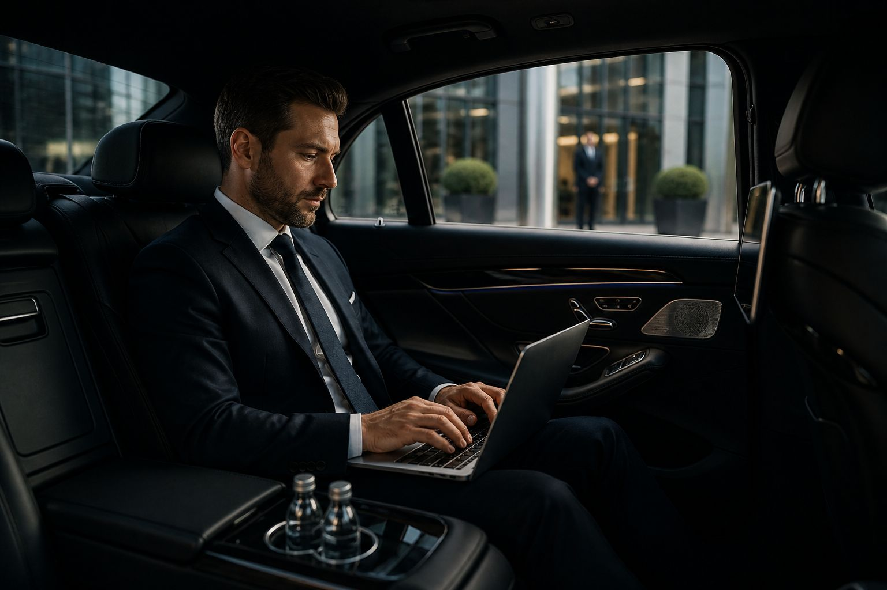

<section id="about">
  <div class="container grid-2cols">
    <!-- FLIPCARD voor de about-tekst (links) -->
    <div class="flip-card" id="flipCardAbout">
      <div class="flip-card-inner">
        <!-- VOORKANT (korte samenvatting) -->
        <div class="flip-card-front">
          <h2 style="font-family:'Playfair Display'; font-size:1.8rem;">À PROPOS | NH</h2>
          <p><strong>L'Art de Voyager entre Terre et Ciel.</strong></p>
          <p>NH, leader du transport de personnes en Belgique (Bruxelles, Wallonie, Flandre). Discrétion, excellence, sérénité. Chauffeurs anglophones, véhicules récents climatisés.</p>
          <p style="margin-top: 1rem;"><strong>Notre promesse : zéro retard, zéro stress, 100% plaisir.</strong></p>
          <p style="margin-top: 1rem; font-size: 0.85rem;"><i class="fas fa-arrow-right"></i> <em>Cliquez ou tapez pour en savoir plus</em></p>
        </div>
        <!-- ACHTERKANT (détails complets) -->
        <div class="flip-card-back">
          <h2 style="font-family:'Playfair Display'; font-size:1.8rem;">NH – VTC de luxe, transferts aéroport & voyages d’affaires</h2>
          <p>
            <strong>NH, l’élégance en mouvement</strong>, est un service de <strong>taxi de luxe, VTC et limousine</strong> basé en Belgique (Bruxelles, Wallonie, Flandre). 
            Nous proposons des <strong>transferts aéroport</strong> vers Zaventem (BRU), Charleroi (CRL), mais aussi vers <strong>Schiphol (AMS), Paris‑CDG, Düsseldorf (DUS) et Luxembourg (LUX)</strong> – ainsi que des <strong>trajets transfrontaliers</strong> sur mesure vers les Pays‑Bas, la France, l’Allemagne et le Luxembourg.
          </p>
          <p>
            Notre flotte de <strong>berlines exécutives</strong> (BMW Série 5, Mercedes Classe E), de <strong>monospaces premium</strong> (Mercedes V‑Class, jusqu’à 8 places) et de <strong>limousines</strong> répond aux besoins des <strong>professionnels, des familles et des cérémonies</strong>. 
            Nos <strong>chauffeurs en tenue</strong>, parlant français, néerlandais, anglais et allemand, vous garantissent <strong>ponctualité, discrétion et confort</strong>.
          </p>
          <p>
            <strong>Tarifs fixes et transparents</strong> (pas de compteur), <strong>réservation en ligne</strong> immédiate, <strong>service client 24/7</strong>, <strong>suivi de vol</strong> inclus. 
            Nous proposons également un <strong>transport adapté pour les PMR et les seniors</strong> (véhicules avec rampe, chauffeurs formés).
          </p>
          <p>
            Découvrez l’<strong>art de voyager entre terre et ciel</strong> avec NH. <strong>Zéro retard, zéro stress, 100% plaisir.</strong>
          </p>
          <p style="margin-top: 1rem;"><i class="fas fa-sync-alt"></i> <em>Cliquez ou tapez pour retourner</em></p>
        </div>
      </div>
    </div>
    <!-- Afbeelding rechts (blijft ongewijzigd) -->
    <div class="about-image-wrapper">
      
    </div>
  </div>
</section>
